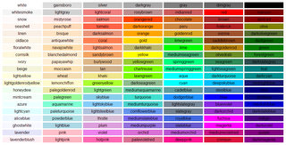
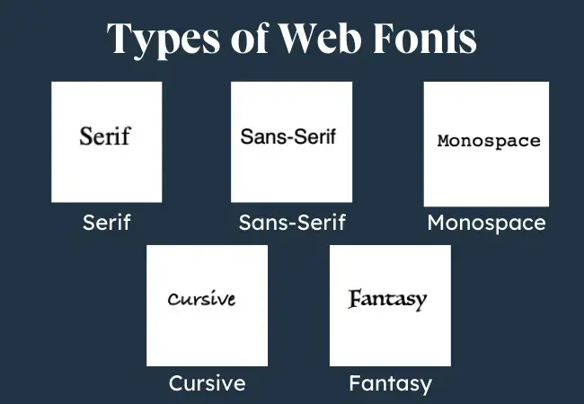
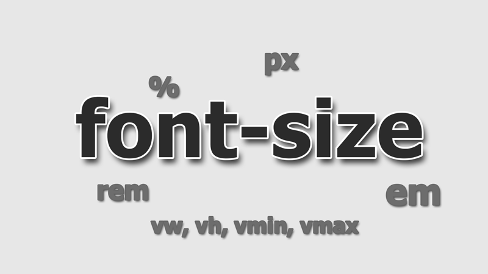

Робота зі шрифтами та їх властивостями
Шрифти суттєво впливають на тон і читабельність веб-сторінки. Основні властивості включають:
Ключові властивості CSS для оформлення тексту:
Колір:
CSS властивість color використовується для визначення кольору тексту в межах елемента.

Font-family
Ця властивість дозволяє встановлювати сімейство шрифтів (його назву, за допомогою якої далі в коді можна викликати шрифт).
font-family приймає список різних сімейств шрифтів. Це відбувається тому, що не всі користувачі матимуть ті ж шрифти, що встановлені на Вашому комп'ютері. Тому, як дизайнер / розробник, ви можете надати список шрифтів, щоб хоча б якийсь шрифт завантажився у більшості користувачів.
Коли браузер зустрічає перший шрифт у списку, він перевіряє його наявність на комп'ютері користувача. Якщо такого шрифту немає, береться наступне ім'я зі списку і також аналізується на присутність. Тому кілька шрифтів збільшує ймовірність, що хоча б один з них буде виявлений на клієнтському комп'ютері. Закінчують список зазвичай ключовим словом, яке описує тип шрифту - serif, sans-serif, cursive, fantasy або monospace. Таким чином, послідовність шрифтів краще починати з екзотичних типів і закінчувати узагальненим ім'ям, яке задає вид накреслення.

Font-size
CSS-властивість font-size визначає розмір шрифту тексту, задаючи висоту від базової лінії до верхнього краю. Вона дозволяє масштабувати текст, використовуючи абсолютні (px, pt) або відносні (em, rem, %) одиниці, що критично важливо для веб-дизайну та доступності.
Цей текст розміром 20 px
Цей текст розміром 18 pt
Цей текст розміром 35%
Цей текст розміром 5 rem

Text-align
CSS-властивість text-align визначає горизонтальне вирівнювання рядкового вмісту (тексту, зображень) всередині блочного елемента. Основні значення: left (ліворуч), right (праворуч), center (по центру) та justify (по ширині). Вона впливає на нащадки елемента і не успадковується для блочних елементів.
Цей текст розташований праворуч
Цей текст розташований праворуч
Цей текст розташований по центру
Цей текст розташований по ширині
Line-height
CSS-властивість line-height задає міжрядковий інтервал (інтерліньяж) — відстань між базовими лініями сусідніх рядків тексту. Вона регулює висоту рядків, впливаючи на читабельність. Рекомендується використовувати відносні значення (числа без одиниць, наприклад, 1.5) для кращої адаптивності та масштабування.
Grown by Nature
We grow our crops naturally. We are a fast-growing
agricultural technology company passionate about
ensuring food security. We leverage our technology
to improve productivity & sales to promote food
security for you and your family.